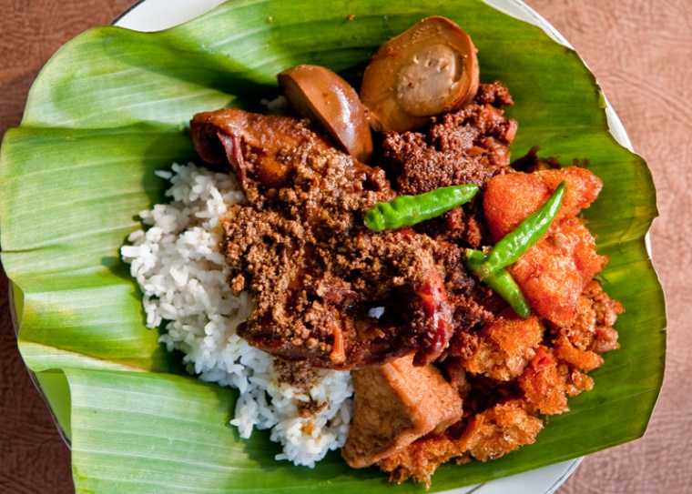

👑Most Loved👑
-
Rendang
-
Dendeng
Products
-
Rawon
Rawon is an Indonesian black soup that famous for its black color as it is made with a seed type called Pangium Edule or locals call it Kluwak, Kluwek, Keluak in Javanese or Kepayang in Indonesian. It is categorized as a poisonous type of seed that only available in Indonesia and Papua. Once Kluwak is cooked, the poison is gone therefore it is edible to consume it.
-
 Gudeg
Gudeg is a traditional Javanese cuisine from Yogyakarta and Central Java, Indonesia. Gudeg is made from young unripe jack fruit (Javanese: gori, Indonesian: nangka muda) stewed for several hours with palm sugar, and coconut milk. Additional spices include garlic, shallot, candlenut, coriander seed, galangal, bay leaves, and teak leaves, the latter giving a reddish-brown color to the dish.
-
Rendang
Rendang is a food that is dominated by a salty and spicy taste because the ingredients are from chilies, garlic and shallots, lemongrass and pepper, but there is a slight savory and sweet taste that comes from coconut milk,rendang is a typical food that comes from padang.
-

Ayam Taliwang
Ayam Taliwang / Taliwang chicken is a typical food from the island of Lombok from Karang Taliwang village, Mataram City, West Nusa Tenggara which is made from chicken meat. The chicken served comes from young native chicken which is grilled and then seasoned with a kind of sauce that includes dry red chilies, shallots, garlic, tomatoes, fried shrimp paste, kencur, brown sugar, and salt.
-

Dendeng
Dendeng is meat that is thinly cut into flakes whose fat is trimmed, seasoned with a sour, salty or sweet sauce by drying over low heat or salting and drying. The result is meat that is salty and half sweet and doesn't need to be refrigerated. Dendeng is an example of preserved food, jerky comes from West Sumatra.
-
Tempe Kari
Tempe Kari / Curry Tempeh made from tempeh cooked in coconut milk, traditional spices such as lemongrass and lime leaves, carrots and green beans.
-
Sate Ayam / Satay
Satay is a typical Indonesian food that first appeared in Madura. The basic ingredients are chicken or beef which is grilled with soy sauce so that it creates a distinctive aroma and a sweet, salty and savory taste. Then add it with a sprinkling of peanut sauce as a complement.